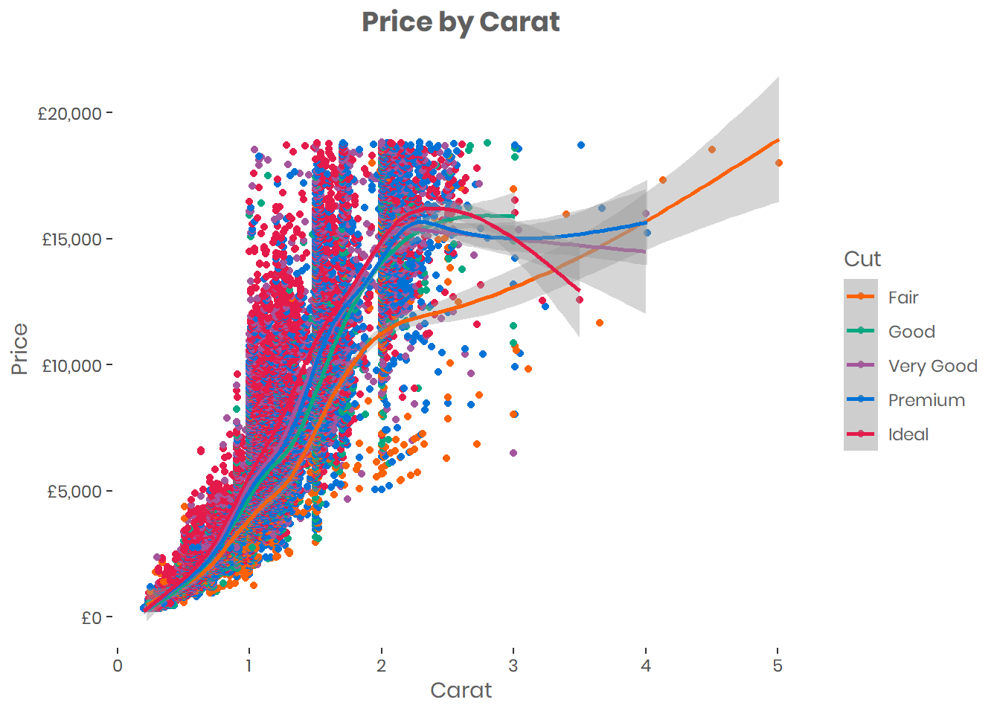

Cookbook
These examples all use datasets within R: diamonds from ggplot2 and iris from base R.
Installing Fonts
The extrafont package enables the use of custom fonts in the plots. To install a new font in Windows 10, download the TrueType font file, and follow the instructions here.
Colours
use plot_colour in plots to assign the colours.
# Set colour scheme
plot_colour <- c( "#e41b4a", "#0072d6", "#a4569c", "#00a881", "#ff6105")
plot_colour_inverse <- c("#ff6105", "#00a881", "#a4569c", "#0072d6", "#e41b4a")
plot_colour_gradient <- c("#003F69", alpha("#003F69", 0.8), alpha("#003F69", 0.6), alpha("#003F69", 0.4), alpha("#003F69", 0.2)) # changes transparencyScatter Plot
# Scatter plot
d <- diamonds # using diamonds dataset
# Scatter plot
d <- diamonds
plot.point <- ggplot(data = d)+
geom_point(aes(x = carat, y = price, color = cut)) +
geom_smooth(aes(x = carat, y = price, color = cut)) +
theme(text = element_text(family = "Poppins", color = "#5F5F5F"),
plot.title=element_text(size=14,family = "Poppins", face="bold", hjust = 0.5),
panel.background = element_blank() ) +
labs( x= "Carat", y = "Price", title = "Price by Carat") +
scale_color_manual(values= plot_colour_inverse, name = 'Cut') +
scale_y_continuous(labels = scales::dollar_format(prefix = "£")) # reformat scales to currency
plot.point Depending on the data, additional changes may be required to “neaten” the plot. For example, we can reformat the y axis labels to display them as currency, and add geom_smooth to help show patterns.
Boxplot
A boxplot shows the distribution of a variable. It gives you the median, the quartiles, and all outliers (shown as individual dots).
You can do lots more to a boxplot, rotating it horizontally, adding the notch argument to add confidence intervals around the median, adding the mean, etc. See tidyverse documentation for more details
d <- diamonds
plot.box <- ggplot(data = d)+
geom_boxplot(aes(x = carat, y = price, fill = cut)) +
theme(text = element_text(family = "Poppins", color = "#5F5F5F"),
plot.title=element_text(size=14,family = "Poppins", face="bold", hjust = 0.5),
panel.background = element_blank()) +
labs( x= "Carat", y = "Price", title = "Price by Carat", fill = "Cut") +
scale_fill_manual(values=plot_colour_inverse) +
scale_y_continuous(labels = scales::dollar_format(prefix = "£")) # reformat scales to currency
plot.box
Histogram
Using geom_hist, we can plot the distribution of a variable. Altering the “binwidth” argument changes the size of the bins, and thus the level of detail.
d <- iris
d <- subset(d, d$Species == "setosa") # only look at "Setosa" species from the Iris dataset
plot.hist <- ggplot(data = d)+
geom_histogram(aes(x = Petal.Length), binwidth = 0.2, fill = "#ff6105") +
theme(text = element_text(family = "Poppins", color = "#5F5F5F"),
plot.title=element_text(size=14,family = "Poppins", face="bold", hjust = 0.5),
panel.background = element_blank()) +
labs( x= "Sepal Length", y = "Number of Observations", title = "Setosa Petal Length Distribution")
plot.hist
Bar chart
We can use either geom_bar or geom_col for bar charts. For the former, the height of the bars relate to the number of cases per group and for the latter, the height represents the values.
d <- diamonds
plot.bar <- ggplot(data = d)+
geom_col(aes(x = cut, y = price, fill = cut)) +
theme(text = element_text(family = "Poppins", color = "#5F5F5F"),
plot.title=element_text(size=14,family = "Poppins", face="bold", hjust = 0.5),
panel.background = element_blank(),
legend.position = "none") + # remove legend
labs( x= "Cut", y = "Value of Diamonds", title = "Value of Diamonds by Cut") +
scale_fill_manual(values=plot_colour_inverse) +
scale_y_continuous(labels = scales::dollar_format(prefix = "£"))
plot.bar
Waffle
An infographic-type vsualisation can be created with the waffle package. In order to use the icons, the Font Awesome TrueType font file will need to be installed (use the 4.7 version from here) and then loaded into R using the extrafontpackage.
library(extrafont)
library(waffle)
#font_import()
#loadfonts(device = "win")
# get proportion of diamonds
d <- table(diamonds$cut)
d <- prop.table(d) * 100
d <- round(d)
waffle(d, rows = 5, use_glyph = "diamond", glyph_size = 6,
title = "Diamonds") +
theme(text = element_text(family = "Poppins", size = 14, colour = "#5F5F5F"),
plot.title=element_text(size=14,family = "Poppins", face="bold", hjust = 0.5),
panel.background = element_blank() )+
scale_colour_manual(values = plot_colour_inverse, name = "Cut", labels = c("Fair", "Good", "Very Good", "Premium", "Ideal")) +
labs( caption = "Diamonds by cut")